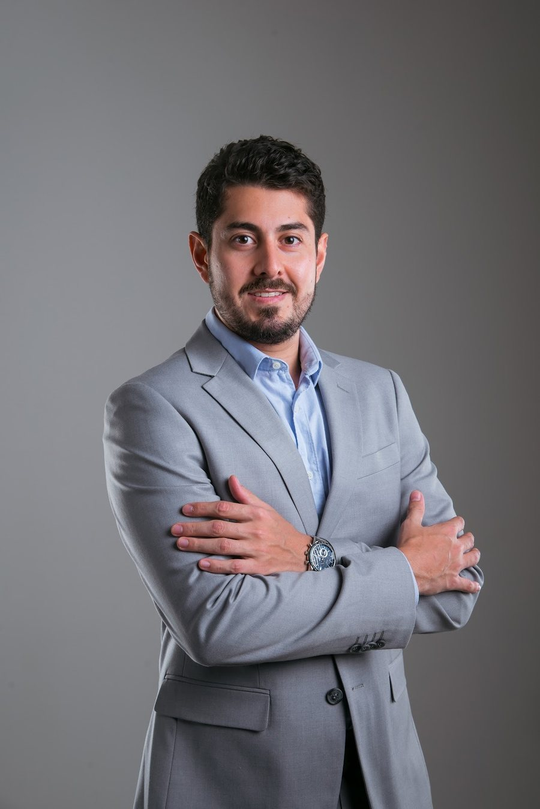
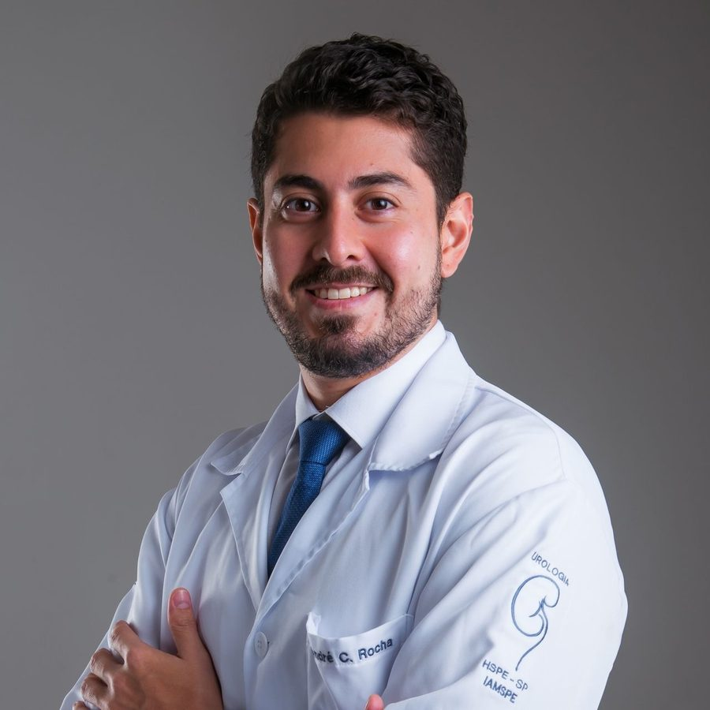

Urologista · CRM-BA 47973 · Título de Especialista em Urologia (TiSBU)
Dr. André Rocha
Urologia para o homem — conversa franca, exame só quando preciso, sigilo sempre.
Urologista em Feira de Santana, com fellowship em Andrologia no IAMSPE (Hospital do Servidor Público Estadual, São Paulo). Atua em saúde sexual e fertilidade masculina, vasectomia, avaliação hormonal e urologia geral.
★★★★★4,9 no Google · 29 avaliaçõesPor onde começar
O que você vem adiando?
Escolha o assunto e leia no seu tempo. Cada página explica o que costuma ser avaliado, como é a consulta e quando não vale esperar. A indicação é individual, definida em consulta.
Ereção, ejaculação e curvatura
Disfunção erétil, ejaculação precoce e doença de Peyronie, tratadas com discrição.
Saúde sexual masculinaFertilidadeQueremos ter filhos e não está acontecendo
Espermograma, varicocele e reversão de vasectomia.
Fertilidade masculinaVasectomiaJá decidi: não quero mais filhos
Planejamento, a cirurgia e o espermograma de controle.
VasectomiaUrologia geralPedra no rim, próstata, urina
Cálculo renal, próstata, prostatite e os exames do dia a dia.
Urologia geralTambém: Avaliação hormonal masculinaSobre o Dr. AndréConsultório
Consulta sem constrangimento
Porta fechada, conversa aberta.
Quase todo homem chega ao urologista depois de adiar. É normal ter receio do exame, vergonha de falar de ereção ou de não conseguir ter filhos. A consulta existe justamente para isso: ouvir sem julgamento, explicar em palavras simples e decidir junto.
Sigilo médico. O que você conta na consulta fica entre você e o médico — é dever ético da medicina. Você decide se vem sozinho ou acompanhado.
“Com abordagem moderna e humanizada, promove saúde, bem-estar e qualidade de vida aos pacientes.” Texto “Experiência” do perfil na Doctoralia · ver a fonte
- 01Agendar sem explicar tudo
Pelo WhatsApp da recepção, basta dizer que quer uma consulta de urologia. O motivo você conta ao médico.
- 02Conversar primeiro
Sintomas, há quanto tempo, remédios, cirurgias, planos de ter filhos. Sem pressa, com as perguntas que você quiser fazer.
- 03Exame só quando preciso
Se o exame físico for necessário, ele é explicado antes e feito com o seu consentimento — você pode perguntar e pedir pausa.
- 04Exames com objetivo
Urina, sangue, espermograma, ultrassom: só o que ajuda a responder a sua dúvida.
- 05Plano explicado
O que é, o que fazer agora e quando voltar. A indicação é individual, definida em consulta.
Quando procurar
Sinais que não merecem espera.
Muitos problemas urológicos começam discretos. Estes pedem uma consulta — e alguns, atendimento no mesmo dia.
- Ardor, urgência ou jato fraco para urinar
- Levantar várias vezes à noite para urinar
- Dificuldade para ter ou manter a ereção
- Ejaculação que acontece antes do que você gostaria
- Caroço, inchaço ou dor no testículo
- Mais de um ano tentando engravidar sem sucesso
- Cólica renal que vai e volta
- Dúvida sobre a próstata depois dos 45–50 anos
Dor forte nas costas com febre, sangue na urina, não conseguir urinar ou dor súbita no testículo? Não espere a consulta: procure o pronto-socorro mais próximo ou o SAMU (192). O consultório atende com hora marcada e não é serviço de urgência.
Trajetória
De São Paulo a Feira de Santana.
Formação no interior e na capital paulista e, em 2025, a mudança para Feira. Datas do histórico público do CNES; formação declarada no perfil da Doctoralia; título na busca da SBU.
- GraduaçãoUNIARA
Formado em Medicina pela UNIARA.
Doctoralia - 2021–2024Santa Casa de Ribeirão Preto
Residências em Cirurgia Geral e Urologia; vínculo de residente no CNES de julho de 2021 a março de 2024.
Doctoralia · CNES - 2024–2025IAMSPE · São Paulo
Fellowship em Andrologia no Hospital do Servidor Público Estadual, de março de 2024 a fevereiro de 2025.
Doctoralia · CNES - Pós-graduaçãoReprodução Humana
Pós-graduação em Reprodução Humana pelo Instituto Sapientiae.
Doctoralia - 2025Feira de Santana
Clínica Uroprocto, aberta em abril de 2025, e urologista no Hospital Dom Pedro de Alcântara desde maio de 2025.
Receita Federal · CNES

Nas palavras dele
Ele responde em público.
Na Doctoralia, o Dr. André responde dúvidas enviadas por pacientes. Dois exemplos, com as palavras dele — resposta pela internet não substitui a consulta.
“Pedras localizadas no rim e menores que 1 cm costumam ser assintomáticas, não há um intervalo de tempo para descer, muitas vezes nunca irá descer! Se você se cuidar, tomar bastante água, evitar alguns alimentos e substâncias como ‘refrigerantes, excesso de carne vermelha, embutidos, ultraprocessados e ricos em sódio’ […] Cuide-se!!”
Resposta pública do Dr. André na Doctoralia · ver a resposta“[…] existe uma chance de recanalização, ainda que pequena e remota. Não há recomendação de espermograma anual, mas pode ser solicitado periodicamente para tranquilizar o paciente.”
Resposta pública do Dr. André na Doctoralia · ver a resposta“E aos meus pacientes, obrigado pela confiança.” Post do Dr. André na ficha do Google, Dia do Urologista (16/09/2026) · ver a ficha
Avaliações
A nota que os pacientes deixaram no Google.
A ficha pública do Dr. André no Google reúne 29 avaliações, com nota 4,9. Os comentários estão lá, nas palavras de quem escreveu — aqui mostramos só a nota e o número.
Conteúdos
Onde conferir o trabalho dele.
Os perfis e cadastros públicos de onde vêm os fatos deste site: formação, título, respostas a pacientes e avaliações.
Formação, áreas de atuação e o texto de apresentação dele.
Abrir ↗DoctoraliaRespostas a pacientesDúvidas sobre cálculo renal, vasectomia, espermograma, prostatite e outras, respondidas em público.
Abrir ↗GoogleNota 4,9 · 29 avaliaçõesFicha pública com endereço, fotos e as avaliações dos pacientes.
Abrir ↗Sociedade Brasileira de UrologiaTítulo de Especialista (TiSBU)Busca pública de urologistas da SBU em Feira de Santana.
Abrir ↗CNES · Ministério da SaúdeHistórico profissionalResidência na Santa Casa de Ribeirão Preto, fellowship no IAMSPE e o vínculo atual em Feira.
Abrir ↗Instagram@drandrerocha.uroO perfil do Dr. André.
Abrir ↗Consultório
Clínica Uroprocto, sala 615.
No Edifício Multiplace, do Shopping Boulevard, na Av. João Durval Carneiro — CASEB, Feira de Santana.
Av. João Durval Carneiro, 3665, sala 615 · CASEB · Feira de Santana – BA · CEP 44052-064
Como chegarConfirme o dia e o horário pelo WhatsApp da recepção, (75) 99981-6684.
Dúvidas frequentes
Perguntas comuns
Quando procurar um urologista?
Quando há ardor ou dificuldade para urinar, sangue na urina, cólica renal, dor ou caroço no testículo, dificuldade de ereção, ejaculação precoce, desejo de ter filhos que não acontece, planejamento de vasectomia ou dúvidas sobre a próstata. Veja urologia geral.
O que conto e o que fica entre nós?
Tudo o que é dito na consulta fica protegido pelo sigilo médico. Conte o que for preciso — sem pressa e sem julgamento. Veja como é a consulta.
A parceira pode participar?
Pode, se você quiser — em temas como fertilidade e vasectomia, a conversa a dois costuma ajudar. Se preferir vir sozinho, também é assim que se faz.
Atende plano de saúde?
Segundo o perfil na Doctoralia, o atendimento é particular. Confirme as condições com a recepção pelo WhatsApp.
O Dr. André faz vasectomia?
Sim, a vasectomia está entre as áreas que ele divulga. Veja como funciona, do planejamento ao espermograma de controle.
Qual é o horário?
Atendimento particular, com hora marcada — confirme o dia e o horário pelo WhatsApp.
Agende
O primeiro passo é uma conversa — com calma e sigilo.
Consulta particular, com hora marcada, na Clínica Uroprocto, Shopping Boulevard. Fale com a recepção pelo WhatsApp (75) 99981-6684.